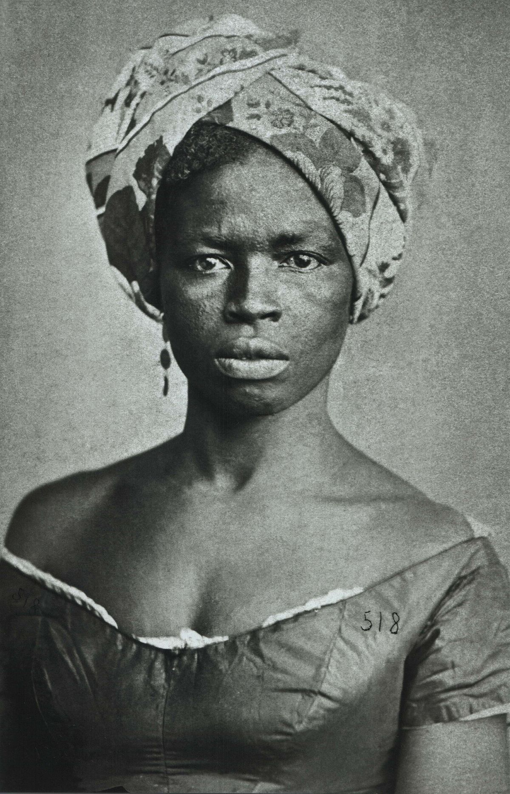
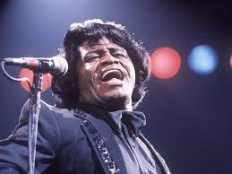
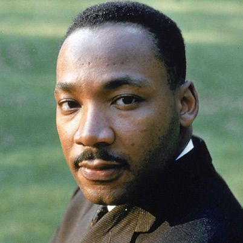

Personalidades Negras que Desafiaram o Racismo e Moldaram a História
Numa jornada através dos anais da história, emergem personalidades cujas vidas foram dedicadas a desafiar as correntes do racismo, pavimentando o caminho para um futuro mais justo. Suas vozes ressoam como testemunhos de resistência, coragem e perseverança diante das adversidades. Nesta matéria, exploraremos as histórias inspiradoras de algumas dessas personalidades negras, cuja luta contra o racismo transcendeu os limites de sua época, deixando um impacto duradouro nas gerações seguintes. Prepare-se para ser envolvido pela coragem e determinação desses heróis que moldaram, e continuam a moldar, o panorama da luta pela igualdade racial.
Dandara dos Palmares: A Guerreira que Desafiou o Sistema e Inspirou Gerações
Nas raízes da história afro-brasileira, surge uma figura que personifica a coragem, a resistência e a determinação na luta contra a opressão: Dandara dos Palmares.
Nascida no quilombo dos Palmares, Dandara viveu durante o século XVII, uma época em que descendentes de africanos escravizados lutavam pela liberdade no Brasil. Casada com Zumbi dos Palmares, líder quilombola, Dandara não era apenas a esposa de um líder, mas uma guerreira formidável por direito próprio. Sua coragem e habilidade militar tornaram-na uma figura central na resistência quilombola.
Em resposta a essas questões, têm surgido movimentos e campanhas, tanto no âmbito dos esportes como na sociedade em geral, para combater o racismo e promover a inclusão e diversidade. A conscientização sobre o papel da mídia na perpetuação ou desconstrução desses estereótipos é fundamental para promover uma representação mais justa e inclusiva nos esportes e na sociedade como um todo.
Dandara desempenhou um papel crucial na defesa do quilombo contra incursões coloniais. Ela participou ativamente de estratégias militares, liderou tropas e defendeu a liberdade com tenacidade. Sua presença no quilombo dos Palmares era uma afirmação poderosa de que as mulheres negras estavam na linha de frente da luta contra a opressão.
Além de suas proezas militares, Dandara também foi uma defensora da igualdade de gênero e liberdade para todos. Sua resistência não se limitava apenas ao campo de batalha; ela desafiava as normas sociais da época, promovendo ideais de justiça e igualdade.
Mesmo séculos após sua morte, o legado de Dandara dos Palmares permanece vivo. Sua história é contada como um testemunho da resiliência negra e da busca pela liberdade. Ela se tornou um ícone para as mulheres negras e para todos que buscam a justiça em meio à adversidade.
Dandara dos Palmares, a guerreira negra que desafiou o sistema, permanece como um farol de inspiração para aqueles que continuam a lutar contra a injustiça.
Sua história nos lembra da importância de reconhecer e celebrar as contribuições das mulheres negras na resistência histórica e destaca a necessidade contínua de perseguir um mundo mais justo e igualitário.

Emicida: A Poesia Contundente e a Revolução nas Batidas do Rap Brasileiro
No pulsante cenário musical brasileiro, um nome se destaca não apenas pela maestria nas rimas, mas pela habilidade única de transmitir as realidades da vida nas periferias urbanas. Emicida, o rapper paulistano cujas palavras são armas de conscientização, tem redefinido o rap brasileiro e ampliado as fronteiras da expressão artística. Nesta matéria, exploraremos a trajetória extraordinária de Emicida, sua influência na música e seu compromisso com a narrativa das comunidades marginalizadas.
Nascido Leandro Roque de Oliveira em São Paulo, Emicida emergiu da periferia para se tornar uma voz poderosa. Suas raízes na improvisação e batalhas de rap nas ruas de São Paulo moldaram a essência crua e autêntica de suas letras.
mero entretenimento. Suas canções abordam questões sociais, raciais e econômicas, capturando a experiência das comunidades marginalizadas. Suas rimas são poesias urbanas que desafiam o status quo e incitam à reflexão.
Emicida não é apenas um músico, mas um ativista. Sua presença no cenário musical é um símbolo de empoderamento, destacando a importância da representação negra na indústria e na sociedade em geral.
Além de sua carreira musical, Emicida é um empreendedor e defensor da educação. Fundador da marca LAB Fantasma, ele também participa ativamente de projetos sociais, promovendo o acesso à educação e oportunidades para jovens de comunidades carentes.
Emicida não é apenas um rapper; ele é um contador de histórias, um ativista e um catalisador de mudanças. Sua música transcende fronteiras, e sua presença na cultura brasileira continua a inspirar uma geração a questionar, resistir e buscar um futuro mais igualitário.
James Brown: O Pioneirismo Musical na Batalha Contra o Racismo
Na encruzilhada entre a música e a luta pelos direitos civis, James Brown emergiu como uma figura única que transcendia os palcos. Conhecido por seus acordes revolucionários e ritmos contagiantes, Brown também desempenhou um papel crucial na batalha contra o racismo. Nesta matéria, exploraremos como o "Deus do Soul" não apenas definiu o panorama musical, mas também enfrentou de frente as injustiças raciais que permeiavam sua época.
Nos anos 60, enquanto a luta pelos direitos civis fervilhava nos Estados Unidos, James Brown se tornou uma voz que ecoava a resistência. Músicas como "Say It Loud – I'm Black and I'm Proud" tornaram-se hinos da comunidade negra, celebrando a identidade e desafiando o estigma racial.
Brown usou sua posição privilegiada no cenário musical para desafiar o status quo racial. Ao recusar-se a se apresentar em locais que segregavam audiências, ele enviou uma mensagem clara de que a música não deveria ser manchada pelo racismo institucionalizado.
James Brown era mais do que um músico; era um ativista que defendia a unidade e igualdade. Seu comprometimento com movimentos pelos direitos civis, incluindo a participação no concerto benéfico "The Concert for Bangladesh", destaca sua postura firme contra a discriminação racial.
James Brown não apenas embalou corações com sua música envolvente, mas também desafiou a sociedade a confrontar as questões raciais de sua época. Seu legado é uma sinfonia de resistência, uma melodia que continua a inspirar gerações a desafiar as injustiças e a lutar pela igualdade racial. A história de James Brown é um testemunho de que a música, quando guiada pela coragem e consciência, pode se tornar uma ferramenta poderosa na batalha contra o racismo.

Martin Luther King Jr.: O Legado Incansável da Justiça e Igualdade
Martin Luther King Jr., uma figura emblemática dos direitos civis nos Estados Unidos, continua a inspirar gerações com sua visão de um mundo onde as pessoas são julgadas pelo conteúdo de seu caráter. Nesta matéria, exploraremos a vida, as conquistas e o legado duradouro de Martin Luther King Jr., cujo impacto transcendeu fronteiras e moldou a luta por justiça e igualdade.
A vida de King foi marcada por desafios e resistência. Enfrentou prisões, ameaças de morte e críticas, mas sua determinação nunca vacilou. Ele liderou marchas e protestos, contribuindo significati-vamente para a aprovação da Lei dos Direitos Civis de 1964 e da Lei dos Direitos de Voto de 1965.
Apesar de seu trágico assassinato em 1968, Martin Luther King Jr. deixou um legado duradouro. Sua influência continua a moldar movimentos por justiça social e igualdade em todo o mundo. Seu aniversário é agora celebrado como o Dia de Martin Luther King Jr., uma oportunidade de reflexão sobre o progresso alcançado e os desafios persistentes.
